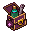

The Buff BagOne bag in your inventory with a slot for each kind of buff: a meal, a drink, a potion, a scroll, a gadget and a field kit, up to 99 of each. Click it (or press B anywhere) and everything in it is used at once. Right-click it to choose what goes in each slot. Six clicks every twenty minutes become one key, and six bag slots become one.
Try it
A slice of the game screen. Your inventory is on the left with the Buff Bag in its first square. The bag is loaded already, and Haste is already running from a scroll read earlier, so you can see a running buff get skipped rather than wasted. Click the bag or press B to use it. Right-click it to change what is in it. Click any other item to use it on its own, the way the game does today. Buff clocks run at one minute a second.
 Inventory
InventoryTry it: press B twice. The second press uses nothing, because every buff is still running. Pause the clock, or wait for one to run low (red) and press again.
How it works
| What | Rule |
|---|---|
| The bag | One item that takes one inventory slot. Inside are six slots, one per kind of buff. Each slot holds one item kind, up to 99, which is the stack size these items already have. |
| Click it, or B | Uses one of everything in it, through the same path as clicking each item: same messages, same scroll tiers from your Wizardry, same refusals. B works from anywhere, with the inventory tab shut. It is free: today's tab keys are I U K J L, and H, C, M, N, G and E are taken, but B is not. |
| A buff already running | Skipped, and the message says so ("Skipped: Haste, 12 min left"). Today a second drink replaces the first and throws its minutes away, and a second scroll does the same. The bag never does that. A buff with under a minute left counts as run out, so one press tops everything up. |
| Right-click | Opens the Buff Bag window. Each slot shows what is in it, how many (of 99), how long it lasts and what it does. Change lists that kind of item from your inventory; pick one and it loads as many as fit. The old stack goes back to your inventory, and if there's no room the swap is refused. Take out empties a slot back into your inventory. Picking the item already loaded tops it up to 99. |
| Where the contents live | On your character, like your quiver's arrows. The bag is the handle, so it can't be traded, dropped, sold or banked while anything is in it. It is safe on death, like everything else. |
| Empty slots | Fine. A bag with only a meal and a potion uses those two. A slot whose item ran out shows "Empty, refill?" and is skipped. |
| Inside | Buff clocks only run outside, so pressing B in the casino works, and the clocks wait until you walk out, exactly as a drink does today. |
| Not in it | The 2X potions (they fire for the whole server and must stay a deliberate click), the Witch's brew (it waits for a death, not a clock), clovers (spent per kill, not timed), the healing salves and plain food (that is E), teleports and waystones. |
What goes in each slot
Every item the game has today, read from the rules file. A slot takes any one of the items in its list.
Today vs the bag
Decisions
1. Drinks and potions are ONE buff today. Split them? My pick: split.
In the code a bar drink and an alchemy potion share one slot on your character: a Potion of the Star replaces a beer. A bag with a drink slot and a potion slot would then only ever use one of the two, and skip the other every press (flip "One buff (today)" in the demo to see it). Splitting gives potions their own buff, so a beer and a potion run together. It is a small power gain: bar drinks are +5% tickets or the like for 10 minutes. It also gives Dex's bar a reason to exist next to Alchemy. The other way is one "drink or potion" slot, which is five slots instead of six.
2. A running buff: skip it, or replace it? My pick: skip.
Skip, with anything under a minute counted as run out. Replacing would throw minutes away, which is what the bag should fix. A shift+B "refresh everything" could be added later if anyone asks.
3. One gadget slot, as asked. Today several gadgets can run at once.
Tinkering lets you run a whetstone, a lantern and a bait box together; only the same gadget twice is refused. One slot is your rule and keeps the bag simple. Gadget users can still click a second one by hand. My pick: one now, a second gadget slot as a later upgrade if Tinkerers ask.
4. The field kit slot waits for v1.2.
Field kits are built on dev and held. The bag can ship with the slot shown and locked ("Field kits arrive in v1.2"), or without it until then. My pick: shown and locked, so archers see it coming.
5. Where the bag comes from
(a) The Store, 150,000 tickets, once: a rich player's purchase that pays for itself in convenience, and a ticket sink (mockup 14 found almost every rich-player purchase is one-time anyway). (b) Tinkering makes it at around level 40, which gives Tinkering a reason. (c) Bom sells it for 25,000, so everyone has one. My pick: (a), with its own art (drafted, above). It is quality of life, not power, so pricing it is fair.
6. No auto-use
The bag never uses itself when a buff ends. That would be a step towards play without anyone there, which the idle cutoff exists to stop. One key is the whole convenience.
7. Quick slots stay as they are
Quick slots (1-4) hold one item each and stay the way to drink one thing. The bag is "all of it, now".
Building it
- Rules (shared): a
buffbagitem.BAG_TYPESmaps each slot to a test on the item (meal,drink,pot_*,use:"charm", a timed gadget,use:"kit"), so a new potion or meal goes in the right slot the day it is added. - Server:
C.bbag = { meal: {k, n}, … }, saved with the character. One message,{t:"bbag", op:"use" | "load" | "take"}. Use runs each loaded slot through the existing item-use path, so every rule a click already obeys holds here too. Loading takes from the inventory and refuses what doesn't fit. - Page: click and right-click on the bag's square, the window (in the kit, like this one), B, and the pips on the square (one per loaded slot). The tooltip lists the contents.
- Cost to run: one message per press instead of six, and nothing ticks; the bag is read only when pressed. Character size grows by six small entries.
- Size: about a day, plus a test that loads, swaps, uses, skips a running buff and refuses a swap with a full bag. If drinks and potions are split (decision 1), add half a day: a new
C.potclock, the buff bar and the Character window's Buffs tab.